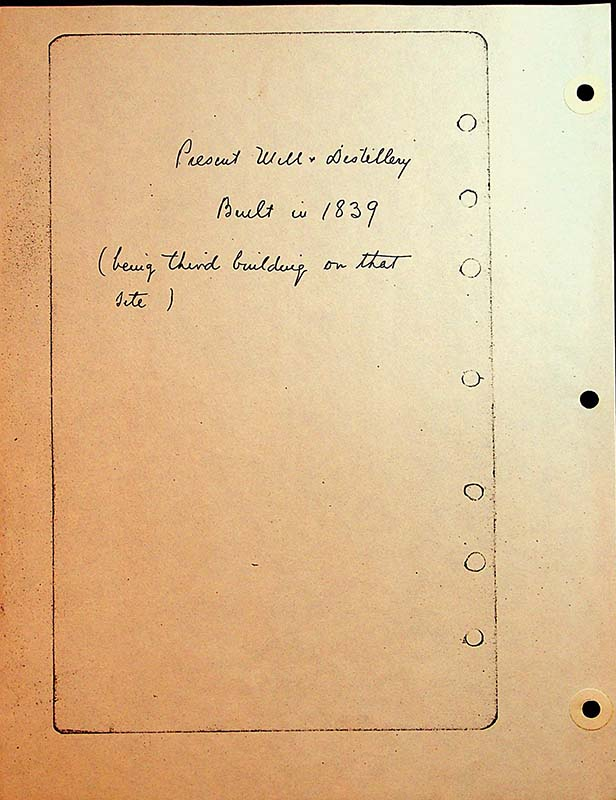

Present Mill and Distillery built in 1839
(being third building on that site)
Drawn image shaped as half-circle with flat side down. Inside: A.Overholt M.O.H. 1838
Circular stone in north gable of house.